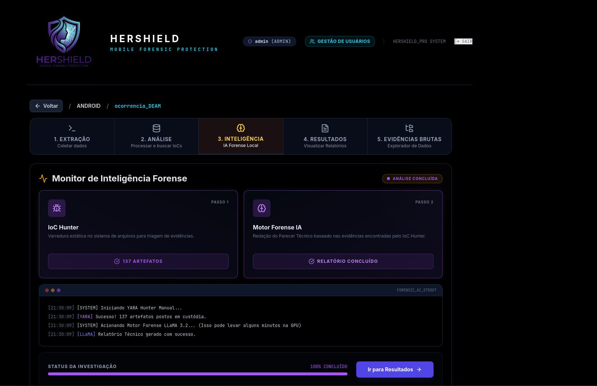
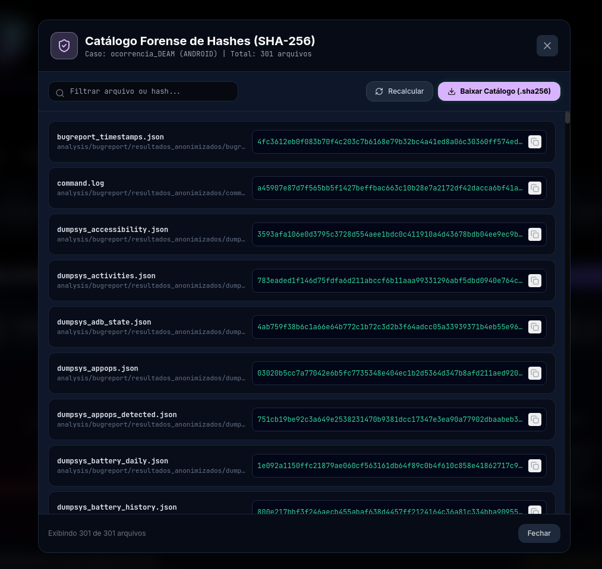
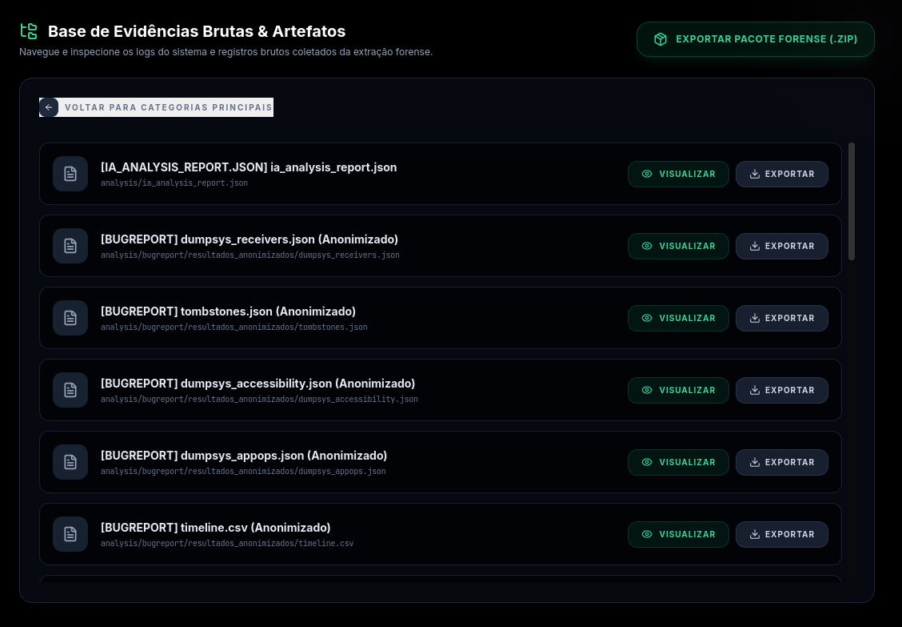
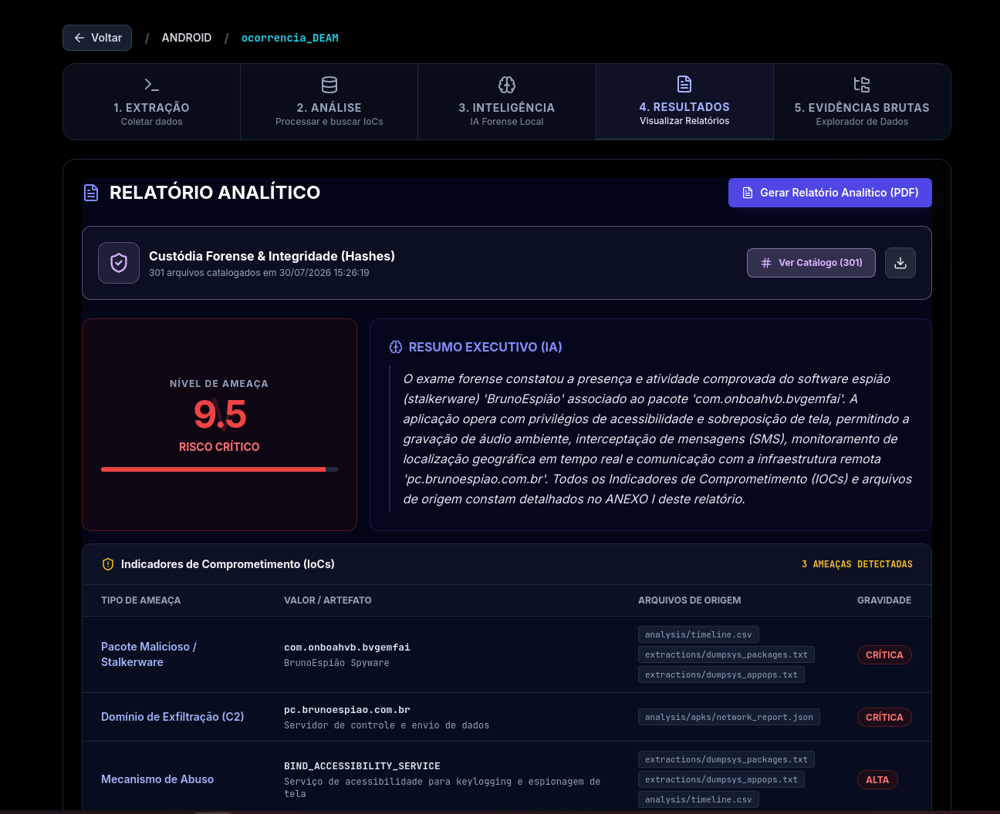

O HERSHIELD dá à polícia o que faltava: capacidade técnica imediata para detectar stalkerwares no celular da vítima — em minutos, na própria delegacia, com privacidade integral.
Mulheres em situação de perseguição frequentemente percebem os sinais: o agressor sabe onde estiveram, com quem falaram, o que planejaram. Desconfiadas de que estão sendo monitoradas por meio de seus próprios celulares, muitas procuram a polícia em busca de proteção.
É nesse momento, porém, que encontram uma barreira invisível: as delegacias, em regra, não dispõem de treinamento especializado nem de ferramentas capazes de verificar tecnicamente a presença de stalkerwares. O relato da vítima, por mais consistente que seja, permanece no campo da suspeita — sem comprovação técnica imediata, o atendimento se limita ao registro formal.
Essa incapacidade de resposta técnica no atendimento inicial gera descrédito, revitimização e uma severa subnotificação dos casos de cyberstalking.
O HERSHIELD nasce para transformar esse cenário: uma ferramenta preventiva e potencialmente salvadora de vidas, que dá à delegacia — pela primeira vez — capacidade de resposta imediata, no exato momento em que a vítima mais precisa.
Realizada na própria delegacia, durante o atendimento inicial — sem esperar meses por um laudo pericial.
Operação estritamente direcionada: nenhum acesso a arquivos pessoais, fotografias ou conversas privadas.
Identificação de aplicativos de monitoramento ocultos e indicadores de comprometimento no dispositivo móvel.
Relatório técnico com cadeia de custódia, pronto para fundamentar medidas protetivas de urgência.
A vítima procura a delegacia. A equipe policial, mesmo sem formação forense, inicia a triagem técnica com o HERSHIELD durante o próprio atendimento.
O sistema verifica indicadores de stalkerware no dispositivo da vítima — permissões abusivas, aplicativos ocultos e sinais de monitoramento — sem tocar em conteúdo pessoal.
Os artefatos encontrados são identificados, correlacionados às ameaças detectadas e documentados por funções hash, assegurando a cadeia de custódia exigida pelas normas processuais penais.
Integridade verificável · arts. 158-A a 158-F do CPP
O relatório converte a suspeita da vítima em substrato probatório imediato, fundamentando a concessão cautelar de medidas protetivas.
Apenas dispositivos com comprometimento efetivo são apreendidos e encaminhados aos institutos de criminalística — otimizando os recursos periciais do Estado.




O HERSHIELD capacita agentes sem formação forense a realizar uma triagem rápida, técnica e precisa — e assegura que nenhuma mulher que busque proteção saia da delegacia sem uma resposta concreta sobre a ameaça que a persegue.
Conheça o HERSHIELD